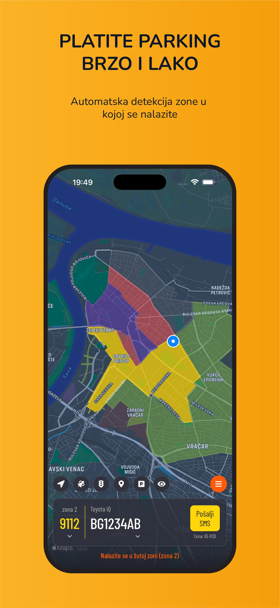
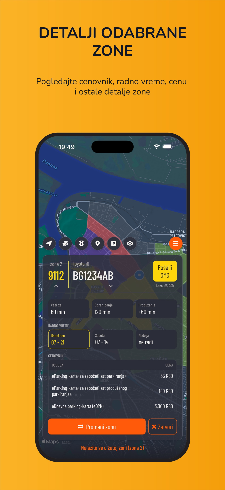
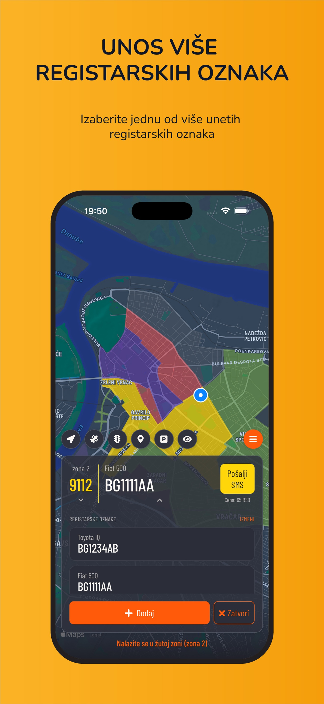
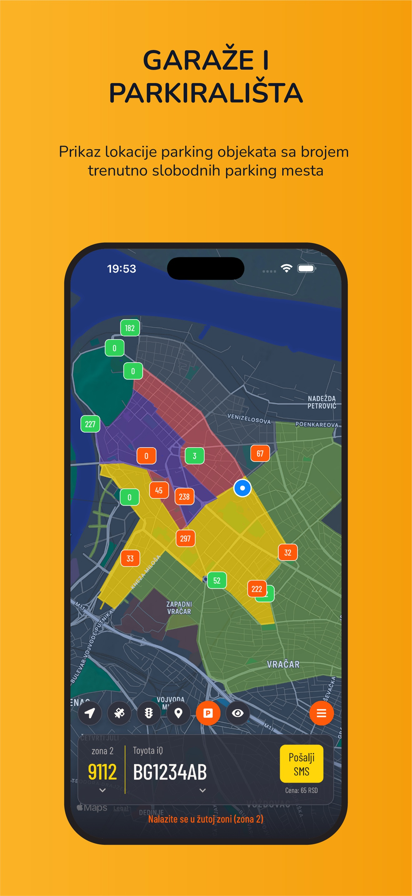
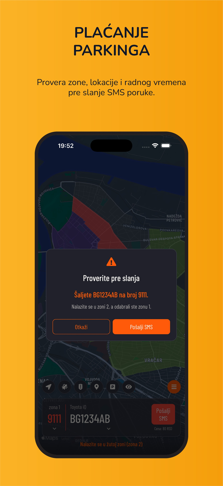
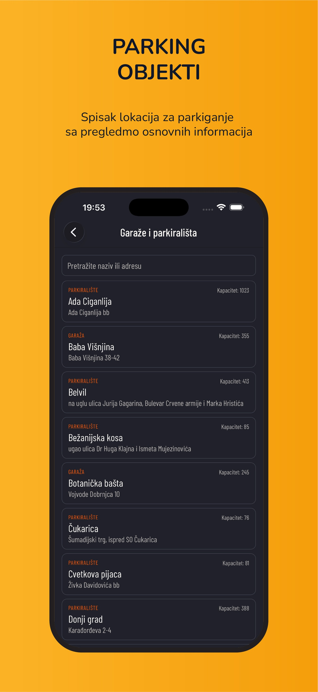
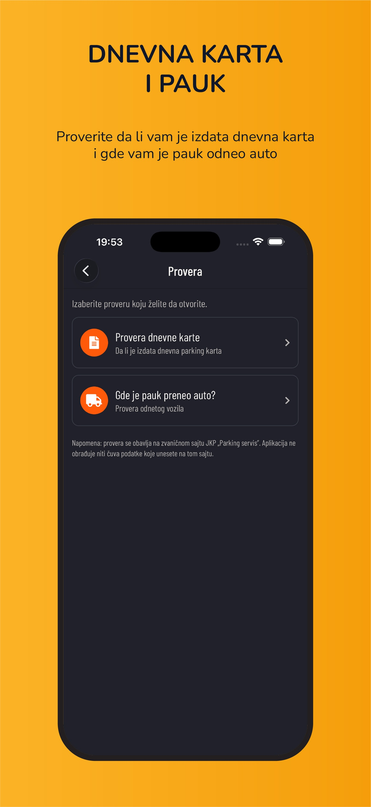
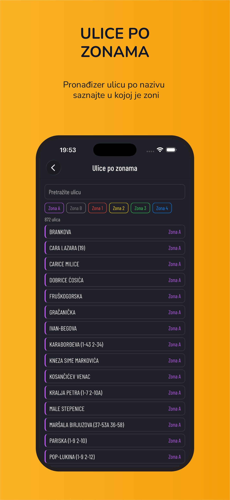
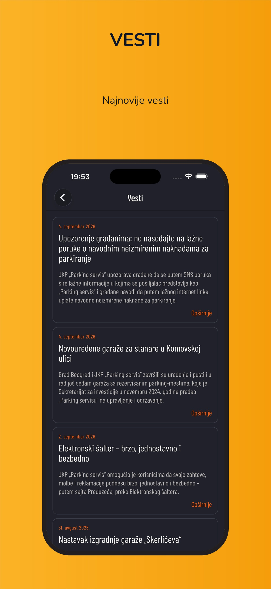
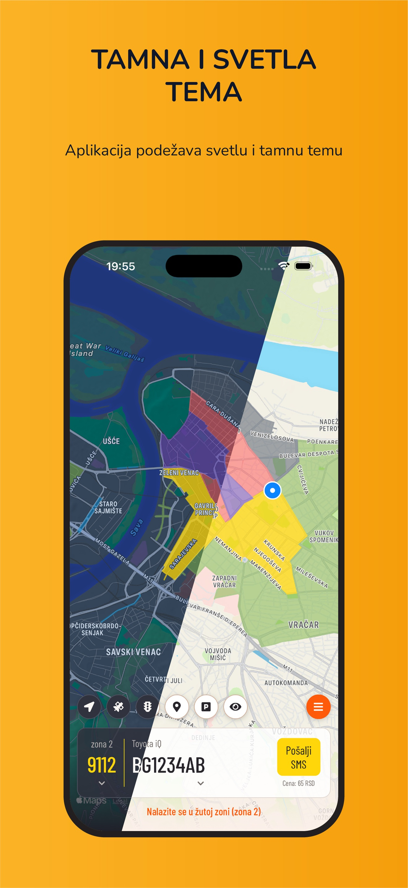

Parking
BG parking
SMS plaćanje parkiranja i mapa zona u Beogradu.
Šta dobijate u aplikaciji
Mapa zona
Pregled zona, upozorenja blizine i određivanje zone.
SMS plaćanje
Brzo plaćanje za sve zone, Vidin kapiju i Sava promenadu.
Slobodna mesta
Stanje garaža i parkirališta, cenovnici i lokacije.
Screenshots










Opis aplikacije
Jednostavna i pregledna aplikacija za plaćanje parkinga SMS porukama na teritoriji grada Beograda. Parking je moguće platiti za zonu A, zonu 1 (crvena), zonu 2 (žuta), zonu 3 (zelena) i zonu 4 (opšta parkirališta izvan zoniranog područja). Za svaku zonu prikazuju se cenovnik i informacije o vremenskim ograničenjima. Osim plaćanja parkinga, moguće je videti i broj trenutno slobodnih parking mesta u javnim garažama i parkiralištima. Za svaku garažu i parkiralište moguće je videti lokaciju na mapi, cenovnik i dodatne informacije o kapacitetu. Dostupan je pregled ulica po zonama.
Aplikacija koristi, ako joj se to dozvoli, GPS lociranje kako bi se odredila zona u kojoj se nalazite. Prikazuje se detaljna mapa svih zona u Beogradu. Moguće je snimiti više od jedne registarske oznake uz prateći opis.
Imajući u vidu da GPS lociranje na telefonu nije uvek precizno, koristeći trenutnu lokaciju i definisane mape zona, aplikacija prikazuje upozorenje kada se korisnik nalazi blizu zone ili na granici dve ili više zona. Tada je najbolje, zanemarujući označenu trenutnu lokaciju, na mapi proveriti svoj položaj i tako utvrditi u kojoj zoni se nalazite. Da bi to uradili što tačnije, preporuka je da se koristi satelitski prikaz mape.
Osim upozorenja o lokaciji, aplikacija proverava radno vreme parking servisa i obaveštava korisnika da nije potrebno poslati SMS poruku kada je radno vreme završeno. Takođe, kada se pokuša slanje SMS poruke na broj koji ne pripada zoni u kojoj se korisnik nalazi, pojaviće se još jedno upozorenje.
Naravno, sva upozorenja je uvek moguće ignorisati i poslati SMS poruku na odabrani broj i registarsku oznaku.
KARAKTERISTIKE:
- prikaz mape sa zonama i određivanje zone u kojoj se nalazi
- spisak brojeva za zonu A, zonu 1 (crvena), zonu 2 (žuta), zonu 3 (zelena) i zonu 4 (opšta parkirališta izvan zoniranog područja). Za svaki broj se prikazuje cenovnik i informacije o vremenskim ograničenjima.
- spisak trenutno slobodnih parking mesta u garažama i parkiralištima. Za svako mesto se prikazuje lokacija na mapi, cenovnik i dodatne informacije o kapacitetu. Moguće je označiti lokaciju kao omiljenu i kreirati rutu do te lokacije.
- spisak ulica po zonama
- pregled ulica po zonama, provera dnevne karte i gde je pauk odneo auto
Aplikacija podržava tamnu i svetlu temu. Na onim telefonima čiji operativni sistem podržava teme, aplikacija se automatski prilagođava temi telefona. Na ostalim uređajima, u delu za podešavanje aplikacije, moguće je ručno izabrati željenu temu.
NAPOMENA: Aplikacija ne koristi GPS lociranje u druge svrhe. Lokacije i kretanje se ne snimaju, niti šalju bilo kome. SMS poruke se ne šalju automatski, da ne bi došlo do neželjenog slanja i slanja za pogrešnu zonu ili van radnog vremena parking servisa.